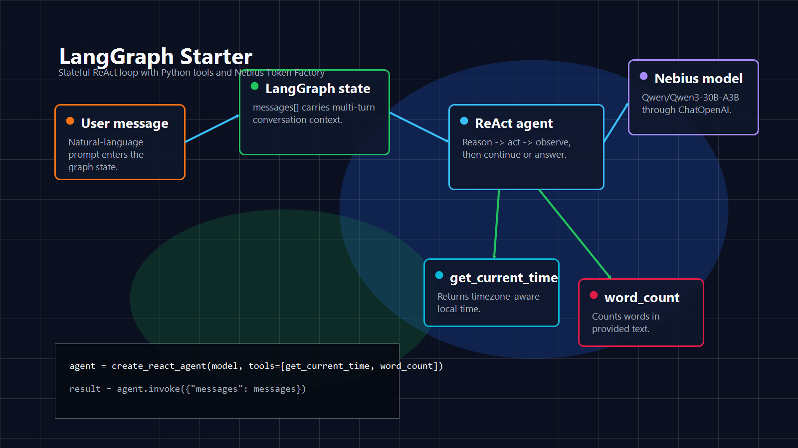

Prebuilt Graph
`create_react_agent` handles the tool loop while keeping the starter easy to inspect.

LangGraph + Nebius Token Factory
A minimal ReAct agent starter with stateful conversation, Python tools, and an OpenAI-compatible Nebius model configuration.
ReAct Loop
Architecture
`create_react_agent` handles the tool loop while keeping the starter easy to inspect.
`get_current_time` and `word_count` are plain `@tool` functions that the model can call.
`ChatOpenAI` points at the Nebius Token Factory OpenAI-compatible API endpoint.
Setup
git clone https://github.com/tirth1263/lang-graph-starter.git
cd lang-graph-starter
python -m venv .venv
source .venv/bin/activate
pip install -r requirements.txtcp .env.example .env
NEBIUS_API_KEY=your_nebius_api_key_here
NEBIUS_BASE_URL=https://api.tokenfactory.nebius.com/v1/
NEBIUS_MODEL=Qwen/Qwen3-30B-A3Bpython main.py
You: How many words are in "the quick brown fox jumps"?
Assistant: 5 wordsRepository